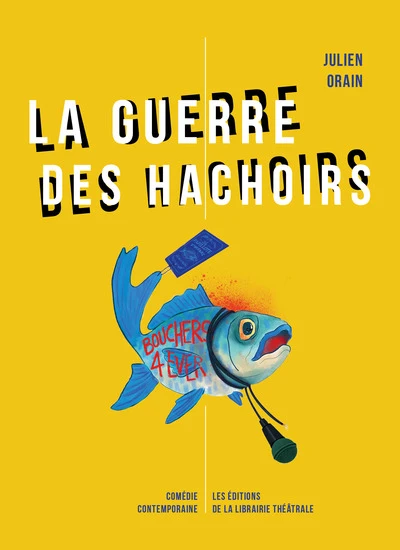

La guerre des hachoirs Saison 2026–2027
Une comédie de Julien OrainDeux ans après l’ouverture de sa poissonnerie, Océane est devenue LA star que les médias s’arrachent. Son succès met le feu au marché de Rungis, la guerre entre les poissonniers et les bouchers-charcutiers est déclarée ! La guerre des hachoirs raconte avec humour et dérision comment des artisans, des journalistes, des policiers, des politiques se retrouvent bien malgré eux dans un conflit que personne n’aurait jamais imaginé. Une comédie satirique, féroce et loufoque menée tambour battant : 4 comédien(ne)s pour 30 personnages. Attention, ça va saigner !